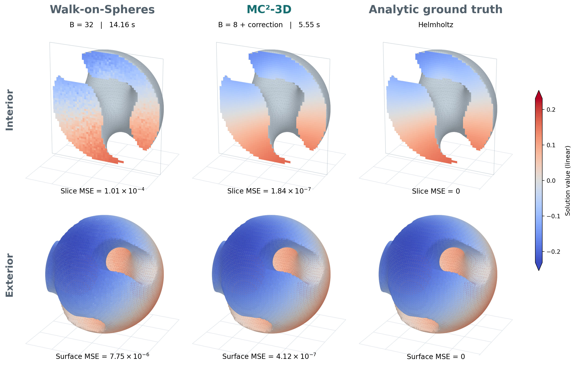
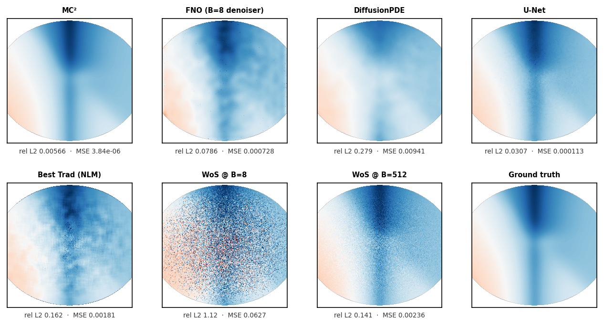
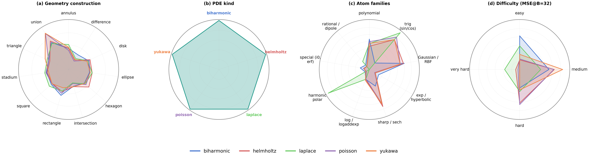

MC2: Monte Carlo Correction
for Fast Elliptic PDE Solving
TL;DR Run a few random walks, then remove their noise with one neural network pass. MC² matches Walk-on-Spheres run with over 1,000× more samples, about 218× faster, and it holds up on PDE types it never saw in training.

Less sampling, less noise, less time. MC² (middle) starts from just 8 walks per point and finishes in 5.6 s. Its interior-slice error is ~550× lower than Walk-on-Spheres with 32 walks (left, 14.2 s).
Top row: interior slice. Bottom row: exterior surface. Right column: analytic solution. All panels share one color scale. One selected example; MSE is measured against the analytic solution.
Partial differential equation (PDE) solvers underpin reconstruction, simulation, and physical modeling across computer graphics, geometry processing, and scientific computing. Classical Monte Carlo PDE solvers such as Walk-on-Spheres (WoS) provide mesh-free estimations that are unbiased, but with accuracy limited by sampling and numerical approximation. Learned solvers are fast but biased and brittle under distribution shift. We therefore present MC², a hybrid WoS-Neural Network (WoS-NN) PDE solver that treats a low-budget Monte Carlo solution as a structured estimator of the true field and learns a single-pass neural correction to recover a high-fidelity solution. MC² matches the accuracy of solutions using over 1000× more Monte Carlo samples, outperforming all evaluated mesh-free classical, denoising, and neural-operator baselines. To enable reproducible study of finite-compute PDE solving, we additionally release PDEZoo, the largest standardized elliptic PDE benchmark to date: 2 million PDEs spanning 5 elliptic families and unlimited geometric compositions, with analytic ground truth and multi-budget Monte Carlo trajectories. Together MC² and PDEZoo (1) empirically establish that finite-sample Monte Carlo error is structured, learnable, and correctable in a single forward pass, (2) show that we can solve PDEs ~218× faster than WoS at matched accuracy, and ~170× faster than state-of-the-art diffusion methods while achieving higher accuracy, and (3) provide the reproducible evaluation infrastructure the field has so far lacked.
Sample a little, then correct in one pass
We introduce a hybrid framework: run Walk-on-Spheres with a tiny budget, then correct its error with a neural network in one forward pass. The 8-walk estimate is noisy, but the noise is structured, so a network can learn to remove it.
-
1
Specify the PDE
Shape, interior source, and boundary values. No mesh is needed.
-
2
Sample with WoS
Average 8 random walks from each query point.
≈ 0.89 s -
3
Apply the MC² corrector
Our corrector network (adapted from SUNet) maps the noisy estimate and source term to a corrected field in one forward pass.
≈ 29 ms
- Backbone-agnostic: also works with standard U-Net or FNO backbones.
- Trained once across many PDEs: no retraining for each new problem.
- Deterministic: a single forward pass, not iterative sampling.
- Works in 2D and 3D, including analytic, real-world, and implicit geometries.
Terminology: MC² is the full solver (8-walk WoS + correction). MC² corrector is only the neural network. The correction can introduce bias, so every result is checked against analytic solutions.
Top accuracy for the cost of 8 random walks
Every learned method below starts from the same 8-walk WoS estimate. MC² adds less than 0.1 s on top of it and is more accurate than every baseline, including raw WoS given 16,384 walks per point.
Error vs. time per problem
Mean MSE against the analytic solution, as in the paper’s Fig. 4(c). Down and to the left is better. Both axes logarithmic.
Values follow the paper (Table 1 and Fig. 4c): mean MSE and mean PSNR over every test problem a method covers, and mean time per problem from the evaluation run on one A100, including the 8-walk WoS input for every corrector. MSE is the paper’s normalized, clipped metric. Clipping caps the error of very noisy low-walk WoS fields, which is why the WoS curve bends at small budgets; the unclipped error falls as 1/walks. WoS at 16–256 walks runs inside one batch of 256 walks, so those budgets share nearly the same time and the curve skips them (dotted segment). *DiffusionPDE and CoCoGen have teachers only for Laplace, Poisson and Yukawa, so their points average those 2,956 problems, while every other method averages all 4,951 problems across five families. On those three families alone, WoS at about the same time (2,048 walks, 11.8 s) has a slightly lower mean error than diffusion and a 7× lower median error. Diffusion time adds 11.49 s of sampling (100 steps, batch 1). Headline ~218× and ~170× come from the paper’s compute accounting: WoS at 32,768 walks takes 200.5 s vs. 0.92 s for MC², and diffusion sampling takes 11.37 s vs. 0.067 s for the MC² corrector (medians).
Accuracy by PDE family
| Family | Cases | DiffusionPDE | CoCoGen | WoS 16k | MC² |
|---|---|---|---|---|---|
| Laplace | 1,000 | 34.40 | 33.31 | 58.30 | 59.94 |
| Poisson | 996 | 27.12 | 27.11 | 35.86 | 42.17 |
| Yukawa | 960 | 29.70 | 29.76 | 41.81 | 46.40 |
| All three | 2,956 | 30.42 | 30.07 | 45.38 | 49.55 |
Across all five families
15.26 dB→44.90 dB
MC² lifts its 8-walk input by ~30 dB on the full test set, which also includes biharmonic and Helmholtz problems. Raw WoS needs 32,768 walks (4,096× more) to reach 44.98 dB.
Shared inputs
The FNO and U-Net correctors are our framework with a standard backbone in place of the MC² corrector (the U-Net matches its parameter count). DiffusionPDE and CoCoGen are prior methods; here they are conditioned on that field and use family-specific teachers with 100 sampling steps, so they are only evaluated on the three families they were trained on.
Shared evaluation
As in the paper, each method is averaged over every test problem it covers: 4,951 problems across five families, or the 2,956 Laplace, Poisson and Yukawa problems for the diffusion baselines. The per-family table compares all methods family by family.
What the error looks like
Poisson equation on an ellipse. Compare each panel with the ground truth (bottom right). MC² keeps the smooth structure; the others leave noise or blur detail.

Where finite elements still win
On our easy-to-mesh 2D domains, FEM is both more accurate and faster. MC² is most useful when meshing is hard: on 3D analytic domains it offers a favorable accuracy–compute tradeoff, and it still returns an answer where the tested gmsh meshing pipeline fails. FEM remains competitive or better on successfully meshed real models and smooth blobs. Meshing failures are specific to the pipeline we tested, not to every FEM implementation.
The only learned method that holds up on unseen PDEs
MC² was trained only on Laplace, Poisson, and Yukawa problems. With the same weights and no retraining, it stays the most accurate learned method on PDE types, solution shapes, and resolutions it never saw.
Mean PSNR on PDE types never seen in training
Dashed line: raw WoS with 16,384 walks per point. MC² is the only learned method above it, about 6 dB ahead of the next-best learned method. Per family, MC² reaches 35.96 dB on biharmonic and 40.05 dB on Helmholtz.
42.3 dB
Test solutions are built only from analytic components held out of training, across all five families.
256² → 1024²
Trained at 256 × 256, MC² runs on 1024 × 1024 grids by tiling, without retraining. Error is even slightly lower than at its training resolution (0.019).
The held-out families share some analytic solution components with the training data. The building-block test removes that overlap. Diffusion baselines need one teacher model per PDE family, so they have no model for biharmonic or Helmholtz.
PDEZoo: a benchmark with exact answers
Every problem comes with its geometry, source term, and boundary conditions, plus an analytic solution to grade against. Saved WoS estimates at several sample budgets show how accuracy grows with compute.
Shapes are built by composing primitives (unions, intersections, differences). The evaluation benchmark covers all five families. The large training pool covers Laplace, Poisson, and Yukawa.

Cite MC²
@misc{hsu2026mc2,
title = {MC2: Monte Carlo Correction for
Fast Elliptic PDE Solving},
author = {Hsu, Ethan and Ge, Ivan and Yam, Hong Meng},
year = {2026}
}
Preliminary citation; publication link forthcoming. Questions? Contact Ethan Hsu.